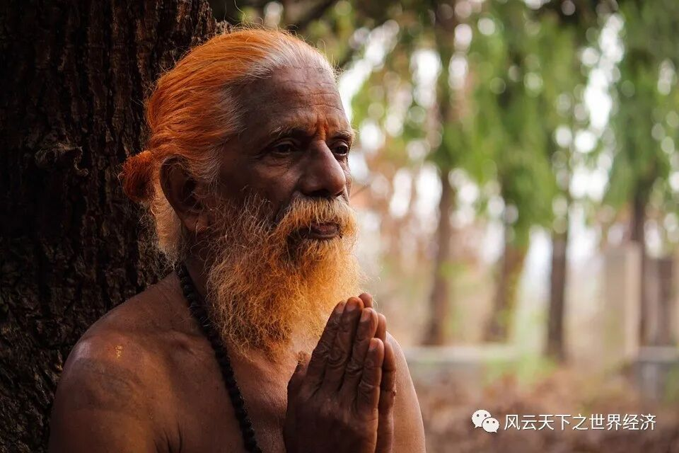
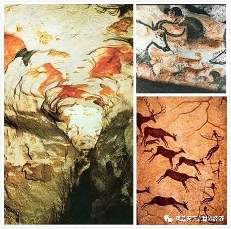

那是寸土寸金永远不会到来的时代，钟表上的指针尚且只有一根。
使命 卷轴 发明
巫被渡鸦的叫声吵醒了。距离他执行自己的逃跑计划还有不到二十四小时。
父亲已经离开，大概是要筹备下午的祭祀。按照惯例，出发之前，部落的男人和女人们需要备好足够的食物，此时他们也都离开了营地。今天的早餐是营地附近树林的两种红色果实，采集的女人们不知道它的名字，但巫确信自己可以在古老的卷轴上找到。
巫和父亲是部落里唯二可以读懂卷轴的人——阅读卷轴，书写卷轴，在需要时为部落的人们提供卷轴上的指引就是他们一生的工作。
巫并不喜欢这个特别的使命，他渴望和部落里的其他年轻人一样奔跑，追逐狩猎狡猾的野兔。但或许是由于祖祖辈辈都履行这一使命的缘故，他和父亲是整个部落中最矮小，最瘦弱的存在。部落里的其它孩子的四肢比他更修长，行进速度也更快，他还曾因为无法从一棵树跳跃到另一棵树上而遭到女孩们的耻笑。不过此刻巫的心情不错，他在房间向阳的一角翻开古老兽皮制成的卷轴。“在逃离部落之前，可以尽可能再多看一点。”他心想。
“在渡鸦之神创造世界的一千五百年后，部落的第四十二代巫用藤和岩石发明了履，族人行进的速度因此提高；创世两千年，部落偶然发现了用松油快速取火并携带的办法；创世两千三百年，连射弩箭和打磨弯刀的方法使得狩猎棕熊只需要三个人……从玄雀氏族处交换得到了可以在林间快速移动的混合藤蔓技术……”
巫用手指撵着卷轴上脱落的细屑，神创世四千年了，除了能跑得更快，跳得更高，狩猎愈发安全之外，族人的生活并没有发生任何的变化。指尖在卷轴上滑动，流逝的仿佛不是时间，而是一代又一代的渡鸦子民们。然而，族人们并不会对千年一成不变的生活感到忧愁，他们看不懂这些古老而又孤独的文字。
“今晚一定在出发的路上离开。”巫再次下定了决心。星象图、兽皮帐篷、行路履，他已经为脱离族人的生活做好了万全的准备，寻找一个水草丰美的地方一个人生活，永远脱离渡鸦氏族乏味的循环。
“巫！快来，有人被火烫伤！”屋外有声音吼叫。
侧柏叶和槐树露蜂房，放在架子第三层的右侧，巫熟练地抓出草药冲了出去——读懂晦涩的草药配方，治疗族人也是他和父亲的工作之一。
祭典 长老 分享
残阳如血，渡鸦的叫声在暮色里彼此呼应，距离他执行自己的逃跑计划还有两个小时。

冥想中的老人
在聚落的中心，族人们点燃火把，按照事先排布好的顺序逐个摆放。昆西长老正在搭好的祭坛上与巫的父亲交流，长老已经戴上了属于他身份的渡鸦面具，头顶黑色的羽毛在风中飘扬。巫的目光聚焦在面具镶嵌的橄榄石上，火焰的光芒在跳动。根据卷轴的记载，这是两千年前部落在迁徙途中的火山附近拾得的。昆西长老非常喜欢这一枚绿色的宝石——这也是它唯一拥有的与众不同之物。渡鸦之神创世之后，为众生灵立下了规矩，在采集和狩猎时族人不得过度囤积。因为所有的食物被即时消耗，所以部落之内很少出现交换。所有人都会被一视同仁地对待并分配得到基本相同的东西。当然，老人和孩子时常会得到特殊的照顾，通过观察，巫猜测这是因为渡鸦原本也有照顾雏鸟和反哺老人的习惯。
烛火摇曳时空
地平线吞没半个太阳的时刻，父亲开始大声念叨古老的咒文。晨昏交替的呢喃声中，族人们神色肃穆。祷告完毕，父亲毕恭毕敬地取来火把，点燃了稻草编织而成的人偶。巫下意识打了一个寒颤，只有他和父亲知道，不久之前，这具被点燃的还是活人的躯干——九百年前，二十支部落在妖精出没的湖泊签订了和平条约，详细约定了迁徙行走的路线。那之后，不同子民们的脚印在相同的道路上越踩越深，再也没有了战争，自然也不再有用以祭祀的战俘。
仪式结束，族人们开始打点行李。一幢幢房屋迅速变成了快速折叠的屋顶翻版和可以收缩的墙壁，巫知道，不出半个小时，这个忙碌的村落就会变成空无一物的平原。瘦弱的巫不需要参与这场“扫除”，他本想在一旁安静地想一想今晚的逃离计划，却发现自己已经被叽叽喳喳的孩子们围住，吵着嚷着想要听故事。巫在崇拜的眼神中席地坐下，眯着眼。
“……这个渡鸦创造的世界还没有光，也没有水和食物……一天，渡鸦踏上了寻水之旅。他听说一个名叫加纳克的男人拥有一眼不断喷涌的泉水。渡鸦一心想要得到泉水，但泉水在加纳克家里，而且他总是盖住泉眼，睡在旁边。渡鸦想将他引开，可那男人很聪明，就是不上当……渡鸦喝干了泉，飞走了。飞了一会儿，他吐出第一口水，创造了尼斯河……”
远处传来的号角无情地打断了巫的讲述。该上路了。
壁画 歌谣 星空
渡鸦羽毛的颜色逐渐融化在天空，巫攥紧自己的行囊，他的逃跑计划随时可以执行。
巫很快迎来了自己的第一个机会，族人们正在穿越山洞，山洞狭窄，大家点燃火把，鱼贯而入，巫走在最后，假装欣赏着壁画，刻意放慢脚步。九百年前，就有族人在这里的石璧上作画，雌黄、孔雀石、青金石等矿物的粉末在火把的映衬下散发着神秘的光芒。壁画里记录着族人的生活：健壮的男人们通过追逐鹿来比较速度；少女们面带微笑，寻找着林间最美丽的花；夏日萤火虫飞舞的时候，所有人在草地上翩翩起舞，庆祝渡鸦之神创造万物……这些都是日常的寻常场景，巫提不起兴趣——直到他看到了石壁上的那抹蓝色。

狩猎采集者留下的精美壁画
巫只在卷轴上看到过海。
“……那是世界上最美丽的宝石，有一天，一头跟高山一样大的鲸鱼浮上宁静的海面，张开巨大的嘴，恣意汲取睛朗天空下的大气。就在这时，远处忽然来了一只渡鸦， 飞进了鲸鱼的大嘴巴……”
壁画上的蓝深邃，神秘，像雪豹的眼睛。画中的族人们在海边祈祷吗？亦或是某种仪式？“竟有我也不了解的历史。”巫陷入了沉思，或许族人的迁徙路线中是有经过海边的？族里的老人们是否见过这美丽的景象？或许自己应该再去问问父亲，巫边走边想，眼前的视线逐渐开阔起来，山洞已至尽头。第一个离开的机会就这样错过了。
巫又迎来了自己的第二个机会。翻越山坡的时候，他悄悄地和队伍拉开了一段距离。夜色渐深，一股凉意从地上涌现，距离今天的落脚点应该已经不远了。巫所幸停下了脚步，望着火把汇成的火龙离他越来越远，越来越远——他听见了歌声。是族长代的头吗？族人们唱起了古老的歌谣。“春风中寻找圆润的鹅卵石，秋风中奔跑在干枯的原野上。”族人的生活随歌声揉碎在空气中，在寂静山谷里不断晕开……接着是男人和女人的二重唱，男声雄浑，女声婉转，在如水的夜里螺旋上升。巫有些被歌声感动，为了不让泪水流落，他抬起了头。
然后，他看到了星空。
几千亿颗星静静躺在湛蓝的天空之中，银河，仿佛一条通路，指向族人前进的方向。虽然比不上太阳的辉煌，也比不上月亮的清澈，但星空梦幻般的光，把大地变得奇异，给巫带来很多美好的梦想。此起彼伏的歌声里，巫的目光透过时间，他看到勇武的族长举起武器了，年迈的祭司开始祷告了，老沉的猎手拉开弓箭了，天真的匠人磨好颜料了……
银河之下，歌声之中，愣在原地的巫突然发现自己有一点喜欢部落的生活，甚至自己一直讨厌的阅读卷轴的工作也没有那么乏味。“你在干什么？赶紧跟上！”远处传来了叫喊声，父亲已经发现了落在最后的他。巫犹豫了一下，应了一声，快步跟了上——逃跑计划看来要暂时搁置了。
四千年来，族人们的生活里一直有壁画，歌谣和星空，而巫突然觉得，这样的日子一直持续下去似乎也不坏。
那是寸土寸金永远不会到来的时代，钟表上的指针尚且只有一根。
- END -